The Other Trigonometric Functions
A wheelchair ramp that meets the standards of the Americans with Disabilities Act must make an angle with the ground whose tangent is or less, regardless of its length. A tangent represents a ratio, so this means that for every 1 inch of rise, the ramp must have 12 inches of run. Trigonometric functions allow us to specify the shapes and proportions of objects independent of exact dimensions. We have already defined the sine and cosine functions of an angle. Though sine and cosine are the trigonometric functions most often used, there are four others. Together they make up the set of six trigonometric functions. In this section, we will investigate the remaining functions.
Finding Exact Values of the Trigonometric Functions Secant, Cosecant, Tangent, and Cotangent
To define the remaining functions, we will once again draw a unit circle with a point corresponding to an angle of as shown in Figure 1. As with the sine and cosine, we can use the coordinates to find the other functions.
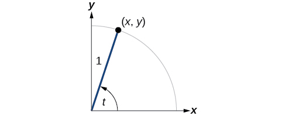
The first function we will define is the tangent. The tangent of an angle is the ratio of the y-value to the x-value of the corresponding point on the unit circle. In Figure 1, the tangent of angle is equal to Because the y-value is equal to the sine of and the x-value is equal to the cosine of the tangent of angle can also be defined as The tangent function is abbreviated as The remaining three functions can all be expressed as reciprocals of functions we have already defined.
- The secant function is the reciprocal of the cosine function. In Figure 1, the secant of angle is equal to The secant function is abbreviated as
- The cotangent function is the reciprocal of the tangent function. In Figure 1, the cotangent of angle is equal to The cotangent function is abbreviated as
- The cosecant function is the reciprocal of the sine function. In Figure 1, the cosecant of angle is equal to The cosecant function is abbreviated as
Finding Trigonometric Functions from a Point on the Unit Circle
The point is on the unit circle, as shown in Figure 2. Find and
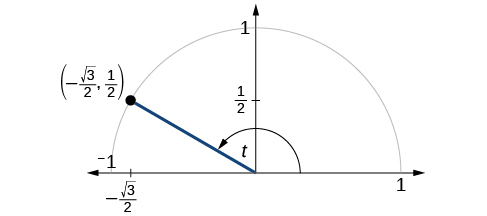
Solution
Because we know the coordinates of the point on the unit circle indicated by angle we can use those coordinates to find the six functions:
Finding the Trigonometric Functions of an Angle
Find and when
Solution
We have previously used the properties of equilateral triangles to demonstrate that and We can use these values and the definitions of tangent, secant, cosecant, and cotangent as functions of sine and cosine to find the remaining function values.
Because we know the sine and cosine values for the common first-quadrant angles, we can find the other function values for those angles as well by setting equal to the cosine and equal to the sine and then using the definitions of tangent, secant, cosecant, and cotangent. The results are shown in Table 1.
| Angle | |||||
| Cosine | 1 | 0 | |||
| Sine | 0 | 1 | |||
| Tangent | 0 | 1 | Undefined | ||
| Secant | 1 | 2 | Undefined | ||
| Cosecant | Undefined | 2 | 1 | ||
| Cotangent | Undefined | 1 | 0 |
Using Reference Angles to Evaluate Tangent, Secant, Cosecant, and Cotangent
We can evaluate trigonometric functions of angles outside the first quadrant using reference angles as we have already done with the sine and cosine functions. The procedure is the same: Find the reference angle formed by the terminal side of the given angle with the horizontal axis. The trigonometric function values for the original angle will be the same as those for the reference angle, except for the positive or negative sign, which is determined by x- and y-values in the original quadrant. Figure 4 shows which functions are positive in which quadrant.
To help us remember which of the six trigonometric functions are positive in each quadrant, we can use the mnemonic phrase “A Smart Trig Class.” Each of the four words in the phrase corresponds to one of the four quadrants, starting with quadrant I and rotating counterclockwise. In quadrant I, which is “A,” all of the six trigonometric functions are positive. In quadrant II, “Smart,” only sine and its reciprocal function, cosecant, are positive. In quadrant III, “Trig,” only tangent and its reciprocal function, cotangent, are positive. Finally, in quadrant IV, “Class,” only cosine and its reciprocal function, secant, are positive.
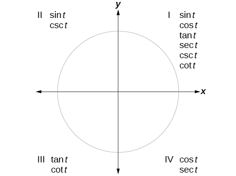
Using Reference Angles to Find Trigonometric Functions
Use reference angles to find all six trigonometric functions of
Solution
The angle between this angle’s terminal side and the x-axis is so that is the reference angle. Since is in the third quadrant, where both and are negative, cosine, sine, secant, and cosecant will be negative, while tangent and cotangent will be positive.
Using Even and Odd Trigonometric Functions
To be able to use our six trigonometric functions freely with both positive and negative angle inputs, we should examine how each function treats a negative input. As it turns out, there is an important difference among the functions in this regard.
Consider the function shown in Figure 5. The graph of the function is symmetrical about the y-axis. All along the curve, any two points with opposite x-values have the same function value. This matches the result of calculation: and so on. So is an even function, a function such that two inputs that are opposites have the same output. That means
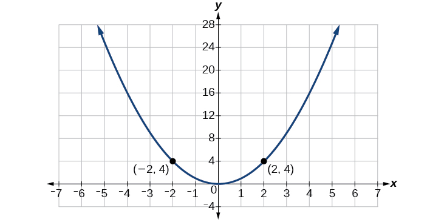
Now consider the function shown in Figure 6. The graph is not symmetrical about the y-axis. All along the graph, any two points with opposite x-values also have opposite y-values. So is an odd function, one such that two inputs that are opposites have outputs that are also opposites. That means
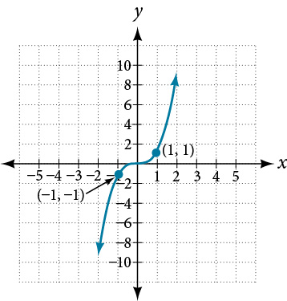
We can test whether a trigonometric function is even or odd by drawing a unit circle with a positive and a negative angle, as in Figure 7. The sine of the positive angle is The sine of the negative angle is −y. The sine function, then, is an odd function. We can test each of the six trigonometric functions in this fashion. The results are shown in Table 2.
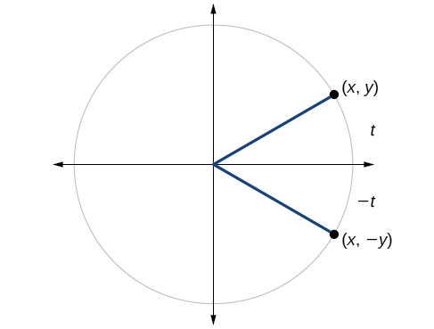
Using Even and Odd Properties of Trigonometric Functions
If the secant of angle is 2, what is the secant of
Solution
Secant is an even function. The secant of an angle is the same as the secant of its opposite. So if the secant of angle t is 2, the secant of is also 2.
Recognizing and Using Fundamental Identities
We have explored a number of properties of trigonometric functions. Now, we can take the relationships a step further, and derive some fundamental identities. Identities are statements that are true for all values of the input on which they are defined. Usually, identities can be derived from definitions and relationships we already know. For example, the Pythagorean Identity we learned earlier was derived from the Pythagorean Theorem and the definitions of sine and cosine.
Using Identities to Evaluate Trigonometric Functions
- ⓐ Given evaluate
- ⓑ Given
Solution
Because we know the sine and cosine values for these angles, we can use identities to evaluate the other functions.
ⓐ
ⓑ
Using Identities to Simplify Trigonometric Expressions
Simplify
Solution
We can simplify this by rewriting both functions in terms of sine and cosine.
By showing that can be simplified to we have, in fact, established a new identity.
Alternate Forms of the Pythagorean Identity
We can use these fundamental identities to derive alternative forms of the Pythagorean Identity, One form is obtained by dividing both sides by
The other form is obtained by dividing both sides by
Using Identities to Relate Trigonometric Functions
If and is in quadrant IV, as shown in Figure 8, find the values of the other five trigonometric functions.
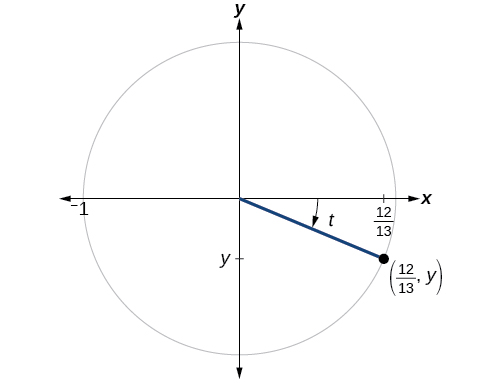
Solution
We can find the sine using the Pythagorean Identity, and the remaining functions by relating them to sine and cosine.
The sign of the sine depends on the y-values in the quadrant where the angle is located. Since the angle is in quadrant IV, where the y-values are negative, its sine is negative,
The remaining functions can be calculated using identities relating them to sine and cosine.
As we discussed in the chapter opening, a function that repeats its values in regular intervals is known as a periodic function. The trigonometric functions are periodic. For the four trigonometric functions, sine, cosine, cosecant and secant, a revolution of one circle, or will result in the same outputs for these functions. And for tangent and cotangent, only a half a revolution will result in the same outputs.
Other functions can also be periodic. For example, the lengths of months repeat every four years. If represents the length time, measured in years, and represents the number of days in February, then This pattern repeats over and over through time. In other words, every four years (except for multiples of 100), February typically has the same number of days as it did 4 years earlier. The positive number 4 is the smallest positive number that satisfies this condition and is called the period. A period is the shortest interval over which a function completes one full cycle—in this example, the period is 4 and represents the time it takes for us to be certain February has the same number of days.
Finding the Values of Trigonometric Functions
Find the values of the six trigonometric functions of angle based on Figure 9.
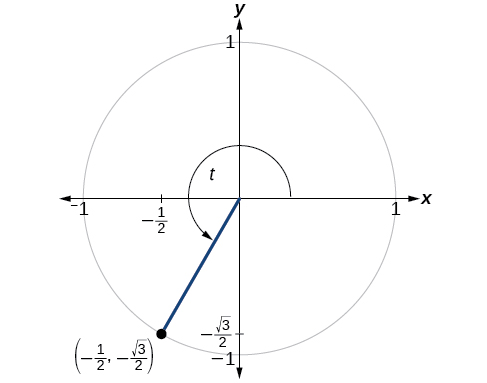
Solution
Finding the Value of Trigonometric Functions
If and find
Solution
Evaluating Trigonometric Functions with a Calculator
We have learned how to evaluate the six trigonometric functions for the common first-quadrant angles and to use them as reference angles for angles in other quadrants. To evaluate trigonometric functions of other angles, we use a scientific or graphing calculator or computer software. If the calculator has a degree mode and a radian mode, confirm the correct mode is chosen before making a calculation.
Evaluating a tangent function with a scientific calculator as opposed to a graphing calculator or computer algebra system is like evaluating a sine or cosine: Enter the value and press the TAN key. For the reciprocal functions, there may not be any dedicated keys that say CSC, SEC, or COT. In that case, the function must be evaluated as the reciprocal of a sine, cosine, or tangent.
If we need to work with degrees and our calculator or software does not have a degree mode, we can enter the degrees multiplied by the conversion factor to convert the degrees to radians. To find the secant of we could press
or
Evaluating the Cosecant Using Technology
Evaluate the cosecant of
Solution
For a scientific calculator, enter information as follows:
Key Equations
| Tangent function | |
| Secant function | |
| Cosecant function | |
| Cotangent function |
Key Concepts
- The tangent of an angle is the ratio of the y-value to the x-value of the corresponding point on the unit circle.
- The secant, cotangent, and cosecant are all reciprocals of other functions. The secant is the reciprocal of the cosine function, the cotangent is the reciprocal of the tangent function, and the cosecant is the reciprocal of the sine function.
- The six trigonometric functions can be found from a point on the unit circle. See Example 1.
- Trigonometric functions can also be found from an angle. See Example 2.
- Trigonometric functions of angles outside the first quadrant can be determined using reference angles. See Example 3.
- A function is said to be even if and odd if
- Cosine and secant are even; sine, tangent, cosecant, and cotangent are odd.
- Even and odd properties can be used to evaluate trigonometric functions. See Example 4.
- The Pythagorean Identity makes it possible to find a cosine from a sine or a sine from a cosine.
- Identities can be used to evaluate trigonometric functions. See Example 5 and Example 6.
- Fundamental identities such as the Pythagorean Identity can be manipulated algebraically to produce new identities. See Example 7.
- The trigonometric functions repeat at regular intervals.
- The period of a repeating function is the smallest interval such that for any value of
- The values of trigonometric functions of special angles can be found by mathematical analysis.
- To evaluate trigonometric functions of other angles, we can use a calculator or computer software. See Example 10.
Section Exercises
Verbal
On an interval of can the sine and cosine values of a radian measure ever be equal? If so, where?
Solution
Yes, when the reference angle is and the terminal side of the angle is in quadrants I and III. Thus, at the sine and cosine values are equal.
What would you estimate the cosine of degrees to be? Explain your reasoning.
For any angle in quadrant II, if you knew the sine of the angle, how could you determine the cosine of the angle?
Solution
Substitute the sine of the angle in for in the Pythagorean Theorem Solve for and take the negative solution.
Describe the secant function.
Tangent and cotangent have a period of What does this tell us about the output of these functions?
Solution
The outputs of tangent and cotangent will repeat every units.
Algebraic
For the following exercises, find the exact value of each expression.
Solution
Solution
Solution
Solution
1
Solution
2
Solution
For the following exercises, use reference angles to evaluate the expression.
Solution
Solution
Solution
Solution
−1
Solution
−2
Solution
Solution
2
Solution
Solution
−2
Solution
−1
If and is in quadrant II, find , , , ,
If and is in quadrant III, find
Solution
If , , , ,
If and find and
If and find and
Solution
, , ,
If and find and
If what is the
Solution
If what is the
If what is the
Solution
3.1
If what is the
If what is the
Solution
1.4
If what is the
Graphical
For the following exercises, use the angle in the unit circle to find the value of the each of the six trigonometric functions.
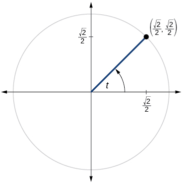
Solution
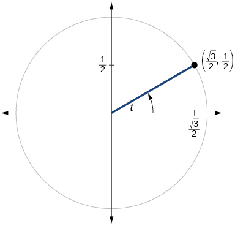
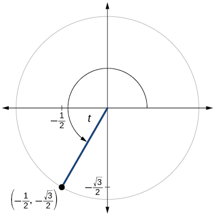
Solution
, , , ,
Technology
For the following exercises, use a graphing calculator to evaluate.
Solution
–0.228
Solution
–2.414
Solution
1.414
Solution
1.540
Solution
1.556
Extensions
For the following exercises, use identities to evaluate the expression.
If and find
If and find
Solution
If and find
If and find
Solution
Determine whether the function is even, odd, or neither.
Determine whether the function is even, odd, or neither.
Solution
even
Determine whether the function is even, odd, or neither.
Determine whether the function is even, odd, or neither.
Solution
even
For the following exercises, use identities to simplify the expression.
Solution
Real-World Applications
The amount of sunlight in a certain city can be modeled by the function where represents the hours of sunlight, and is the day of the year. Use the equation to find how many hours of sunlight there are on February 11, the 42nd day of the year. State the period of the function.
The amount of sunlight in a certain city can be modeled by the function where represents the hours of sunlight, and is the day of the year. Use the equation to find how many hours of sunlight there are on September 24, the 267th day of the year. State the period of the function.
Solution
13.77 hours, period:
The equation models the blood pressure, where represents time in seconds. (a) Find the blood pressure after 15 seconds. (b) What are the maximum and minimum blood pressures?
The height of a piston, in inches, can be modeled by the equation where represents the crank angle. Find the height of the piston when the crank angle is
Solution
7.73 inches
The height of a piston, in inches, can be modeled by the equation where represents the crank angle. Find the height of the piston when the crank angle is